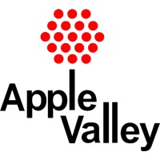

 Information Technology Assistant
In 2017, I had the privilege of volunteering as an Information Technology Assistant at the City of Apple Valley's IT deparment. This was my first experience in the technology world and it inspired me to get more involved with technology while in high school.